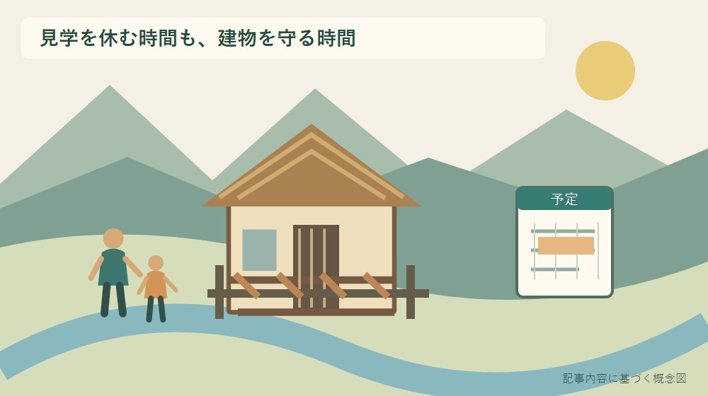
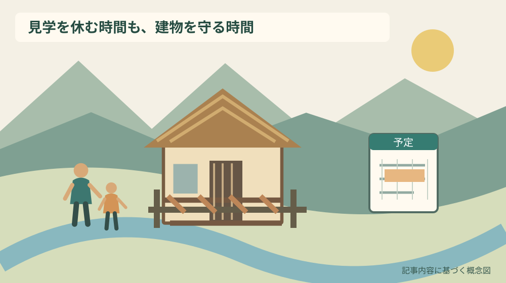
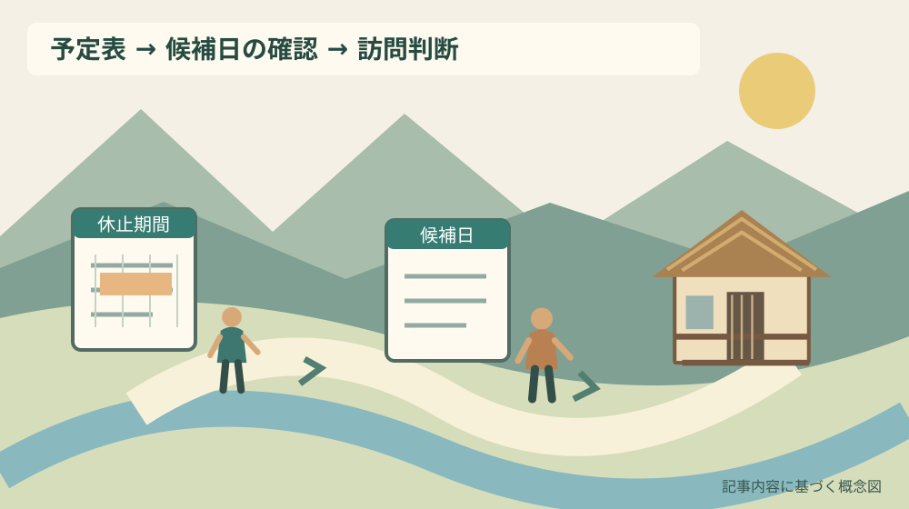

友田家住宅の見学休止｜森町で10月5日まで

Q. 友田家住宅は、2026年10月初めに見学できますか？
A. 森町の友田家住宅は、施設管理のため2026年9月26日（土）から10月5日（月）まで見学できません。期間中の問い合わせは森町教育委員会社会教育課文化振興係、0538-85-1114です。10月6日の再開は案内本文で確約されていません。今日は家族の予定表に休止期間を記し、訪問候補日は公式情報で確かめてください。
茅葺きの家を守る時間を、家族の予定にも入れる
友田家住宅を管理する人には、見学者を迎える時間とは別に、建物を維持する時間が必要です。森町が施設管理を理由に見学不可の期間を示しました。秋に家族で出かける計画があるなら、まずその期間を予定表へ写すところから始められます。
大石浩之（磐田市／不動産業）です。私は、見学できないという知らせにも文化財を守る仕事が表れていると考えます。閉まっている日に訪問を重ねるより、案内を家族で共有する方が、移動する側にも管理する側にも負担を増やしません。
この記事は、2026年9月30日に確認した町の案内をもとに、訪問できない期間と確認窓口を整理します。建物の歴史を知ることと、希望日に見学できることは別の問いです。屋根や間取りへの関心は残したまま、出発を決める材料を先にそろえます。
事実整理｜9月26日から10月5日まで見学不可
森町の「友田家住宅見学不可のお知らせ」は、国指定重要文化財の友田家住宅について、施設管理のため2026年9月26日土曜日から10月5日月曜日まで見学できないと案内しています。表示更新日は2026年9月24日です。初回公表日は本文に明記されていません。
休止期間には10月3日土曜日と10月4日日曜日も含まれます。週末なら見られるだろう、と曜日だけで判断しないでください。子どもの休みや家族の帰省と重ねた予定でも、この二日間は今回の見学不可の範囲に入ります。
期間中の問い合わせ先は、森町教育委員会社会教育課文化振興係です。電話番号は0538-85-1114と案内されています。現地で管理者を探す前に、この窓口へ希望日と見学したい内容を伝えれば、何を確認したいのかが明確になります。
案内が示している理由は「施設管理」です。具体的な作業名、工事費、工事の規模、予約受付の有無は記載されていません。屋根の修理だろう、災害の影響だろうという推測を、休止の理由として家族へ伝えることは避けます。
10月5日までという終期は、10月6日の開館を確約する文ではありません。休止終了日の翌日に行く計画なら、希望日の見学可否を改めて確かめます。「休止期間の外」と「その日の見学を確認済み」を、予定表の同じ印にしないのが実用的です。
文化財の紹介ページと、訪問案内は役割が違う
森町の「文化財」ページは、友田家住宅を森町亀久保の国指定文化財として紹介しています。茅葺きの民家を調べる際の基本資料になります。一方、2026年秋の休止期間は別のお知らせに載っています。建物の紹介だけで当日の可否まで決めないでください。
町の紹介には、友田家住宅のほか、友田家の隠居屋住宅も別の指定物件として登場します。似た名称を検索しているうちに、別の建物の説明を読んでいることがあります。今回の休止案内の対象名を、そのまま家族の共有メモへ残します。
友田家住宅の茅葺きへの復元と、古い家を維持する費用の考え方は、友田家住宅の値打ちと維持費の記事で扱っています。今回は保存の経緯を繰り返すより、見学に出かける前の判断へ焦点を絞ります。
建築に興味がある家族なら、公開が確認できるまで、町の写真や説明を読み、現地で見たい部分を一つ選ぶ準備ができます。例えば屋根の形なのか、室内の間取りなのかで、次に窓口へ尋ねる内容も変わります。資料を見る時間も見学の準備です。

森町での暮らしへの影響｜運転する人だけに確認を任せない
友田家住宅の見学を含む家族の外出は、運転、集合、食事、帰宅後の予定までつながります。見学不可の情報を一人だけが知っていても、別の家族が古い予定で動けば調整は終わりません。今日のうちに同じ案内のURLを共有する方法を勧めます。
私なら、予定表の施設名の横へ「9月26日〜10月5日見学不可」と書きます。「要確認」だけでは、何を確かめれば済むのか分かりません。休止期間と、次に希望している日付を別に書くと、家族が電話や予定変更を引き受けやすくなります。
乗せてもらう家族にもできる仕事があります。町の案内を保存する人、集合予定を変更する人、別の日の候補を出す人を分ければ、運転担当に情報収集まで集中しません。外出の準備を一人の善意で回し続けないための、小さな分担です。
三倉・天方方面の移動を考える際には、距離より移動の代替を見る記事も参考になります。ただし、過去の記事にある地域の説明を、今回の運行や道路の最新情報と取り違えないよう、利用直前の確認を加えます。
見学を取りやめると、せっかく空けた一日が惜しく感じられるかもしれません。それでも、休止を知った段階で行程を変える方が、現地に着いてから同行者全員の予定を組み直すより選択肢を残せます。行かない判断も、移動の段取りの一部です。
良い点｜休止期間と問い合わせ先が一緒に分かる
森町のお知らせの良い点は、見学できない期間が日付で示され、問い合わせ先も同じページで分かることです。期間だけでは次の質問先が残り、電話だけでは連絡前に判断できません。両方があるため、休止中の訪問は家族側で避けられます。
私は、施設管理のために見学を止めるという案内を尊重したいと考えます。公開を続けることだけを価値にすると、管理に必要な時間が見えなくなります。見学する側が日を改める余地を持つことは、担い手の仕事を邪魔しない具体的な協力です。
問い合わせが文化振興係へ整理されている点も、訪問者が使える情報です。親戚の話、古い観光冊子、個人の投稿を何件も比べるより、今回の案内を出した窓口へ希望日を示して聞く方が、判断の根拠を一本にできます。
ただし、窓口があるからといって全員が同じ質問を別々にする必要はありません。家族内で代表を一人決め、聞いた日時と回答を共有することを私は勧めます。町の担当者の説明時間も、家族の連絡の手間も増やさずに済むからです。
注文したい点｜翌日の再開まで読み込まない
友田家住宅の休止案内には、10月6日以降の個別の見学条件が書かれていません。私は、今後再開を知らせる場合には、訪問前に見るべき情報の場所が分かると助かると考えます。現段階で不足している情報は、不足したまま扱います。
見学の申込みが必要か、人数の相談が必要か、どこまで入れるかも、今回の短い案内からは確定できません。一般的な文化施設の利用方法を当てはめず、希望日の条件として尋ねます。分からない項目を空欄に残す方が、誤った予定を確定するより誠実です。
文化財の一般紹介ページには、本文と問い合わせ欄で異なる電話番号の記載も見られます。今回の休止中の問い合わせには、新しい休止案内に明記された0538-85-1114を使います。古いページの番号を無条件に引き継がないための区別です。
私は、管理作業の詳細まで一律に公表してほしいとは考えていません。保存や作業の事情もあるはずです。ただ、訪問する家族に必要なのは、いつ見られるか、誰に確かめるかです。まず希望日一つを絞り、その問いを窓口へ届けるところから始めます。

対案・結論｜今日、予定表に休止期間を記す
友田家住宅を訪ねる準備として今日できる行動は、家族の予定表に2026年9月26日から10月5日までの見学休止を記すことです。予定を大幅に組み替える前でもできます。紙のカレンダーなら施設名の下へ、共有予定なら説明欄へ入れます。
次に、もともとの訪問候補日が期間内かどうかを確認します。期間内なら友田家住宅の見学を外し、別日にするか、今回の外出自体を改めるかを相談します。閉まっていても外からだけ見ようと、許可のない敷地へ入る計画には変えません。
期間外の日を選ぶ場合は、「10月○日に友田家住宅の見学を考えています」と具体的に伝えます。一般的な開館状況を聞くだけでなく、その日と希望する見学内容が可能かを確かめます。質問の範囲を絞ると、家族の計画へ回答を戻しやすくなります。
別の古建築へ行程を変えるなら、森町の古建築活用を比較した記事で、建物ごとの使われ方を読むことができます。ただし代替先も、その日の公開や利用条件を確認してから予定へ入れます。空いているはずという推測の連鎖を止めます。
家族に残す記録｜確認済みと未確認を分ける
友田家住宅の訪問メモには、施設名、所在地の地区、休止期間、出典URL、確認日を残します。これだけで、家族が後から検索し直す際に同じ情報へ戻れます。建物の紹介と休止のお知らせは、見出しを付けて別々に保存すると混同を防げます。
電話で聞いた場合は、問い合わせた日、希望した訪問日、回答の要点を一緒に書きます。「大丈夫だそうです」だけでは、どの日の何が可能なのかが消えます。人数や公開範囲について尋ねたなら、その条件も回答と組にして残してください。
休止案内の画像だけを送る場合も、元のURLを添えます。画像は日付の共有には便利ですが、その後に更新があっても内容は変わりません。次に出発する人が公式ページを開けるようにしておくと、確認が一人に依存しなくなります。
建物を見た後の記録も、訪問できた範囲と資料で読んだ内容を分けます。室内を見ていないなら、間取りを現地確認したとは書きません。家族の思い出を残すノートほど、写真の印象と確かめた事実を混ぜない方が、次の訪問に役立ちます。
大石の視点｜守る仕事を、開いている日だけで測らない
私は、文化財の価値を見学できる日数だけで測りたくありません。家を残すには、見る人の目に入らない管理が続きます。友田家住宅の今回の作業内容は分かりませんが、施設管理という理由が示された以上、見学側の都合だけで公開を求めるつもりはありません。
私なら、家族の予定表を開いたとき、最初に休止期間を転記します。これは私が実際に訪れた体験談ではなく、段取りについての意見です。きれいな屋根を見たいという気持ちを消さずに、管理する人の時間と、家族の移動時間を同時に守る方法だと考えます。
一方で、短い休止案内だけでどこまで予定を立てられるのか、私にも迷いがあります。問い合わせを増やさずに済ませたい気持ちと、せっかくの訪問を確実にしたい気持ちは両方あります。だから、案内で分かることは読み、残る質問だけを一つに絞ります。
建物を維持する担い手へ、訪問者が修繕費や人員の解決を求めても、その場では答えが出ないことがあります。私たちが今日できるのは休止情報を共有し、不要な移動と現地対応を増やさないことです。小さな配慮ですが、保存への関心を行動に変えられます。
まとめ｜秋の見学は、日付の確認から始める
友田家住宅の見学不可期間は2026年9月26日から10月5日までです。期間中の質問先は森町教育委員会社会教育課文化振興係、0538-85-1114です。10月6日を確認済みの再開日として扱わず、候補日が決まった段階で公式情報へ戻ってください。
家族で同じ予定表を見られる状態にすることが、今回の最初の一歩です。建物への興味を急いで結論に変えず、見たいところを一つ残しておく。見学する人と守る人の双方に時間が残る予定を、私は勧めます。
よくある質問
友田家住宅の訪問前に、休止期間と候補日の条件を分けて確認します。
10月3日・4日の週末なら見学できますか？
2026年10月3日土曜日と4日日曜日は、町が示す9月26日から10月5日までの見学不可期間に含まれます。週末でも今回の休止対象です。家族の予定表から見学を外し、別の日を候補にしてください。建物の紹介ページや過去の訪問記に開館情報があっても、今回の休止案内を優先します。
10月6日から必ず再開しますか？
町の休止案内は10月5日まで見学不可としていますが、10月6日の再開を確約する記載は確認できません。翌日を自動的に見学可能日と扱わず、出発前に最新案内を確認してください。希望日の可否が分からない場合は、森町教育委員会社会教育課文化振興係0538-85-1114へ、その日付を伝えて確認します。
管理作業の内容や見学予約は分かりますか？
2026年9月30日に確認した町の案内には、施設管理という理由と休止期間、問い合わせ先が載っています。具体的な管理作業、工事費、予約受付の有無は記載されていません。必要な場合は希望日、人数、見学したい範囲を整理して文化振興係へ確認し、推測を家族の確定予定へ書き込まないようにしてください。
実家の建物や管理の情報を整理する場合は、実家カルテも利用できます。売却未定でも使える本サイト運営会社の民間サービスです。森町や各施設の公式手続ではなく、利用は任意です。
公式情報源
2026年9月30日確認（2026年9月確認）。開催・受付・公開状況や数値は変わる場合があります。行動前に公式案内を確認し、個別の税務・契約・工事などの判断は担当窓口や専門家に相談してください。